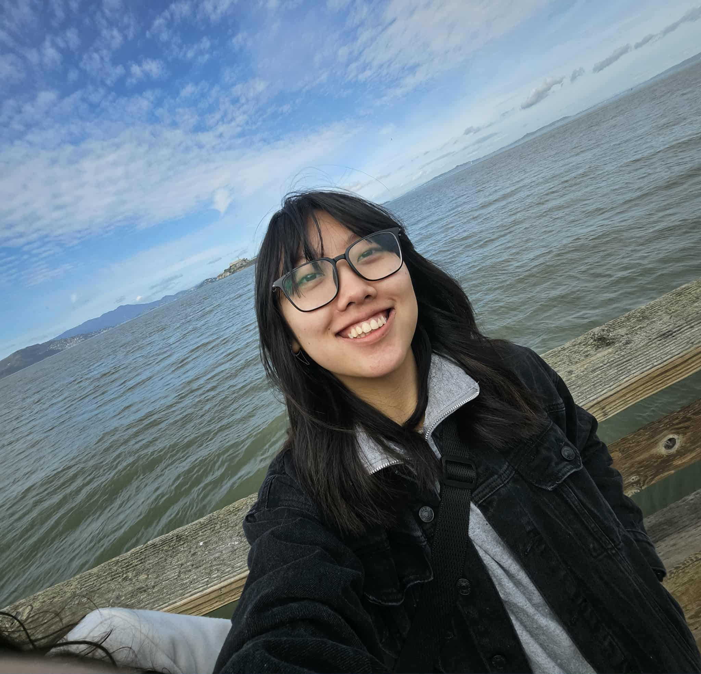
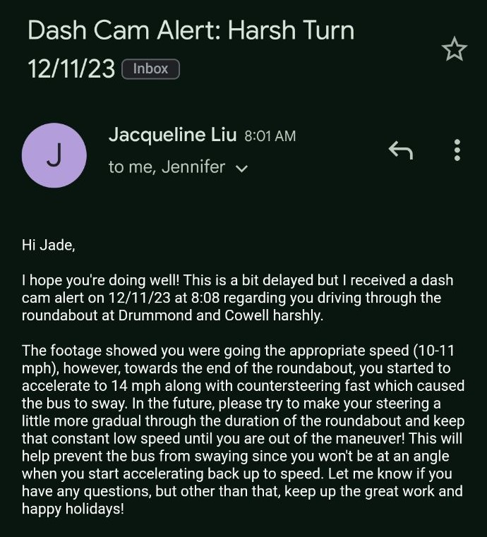

Hi, my name is Liew Jade Saefong. I am a she/her, Mien-American first generation recent computer science graduate from University of California, Davis!
I am 23 years young and the youngest of six daughters! I grew up in Sacramento, attended college in Davis, and lived in Roseburg, Oregon for a short period of time.
I graduated with a bachelors in Computer Science in September 2025!
This was my first job that I ever had. I landed a Concierge position at an independent
and assisted living facility.
I greeted and assisted visitors, answered daily phone calls, and made sure to keep work stations orderly.
I made sure to follow my daily assigned tasks. This was an
amazing first job oppurtunity
to have and I am thankful they gave me a chance to experience it.
I became a student assistant for the UWP Writing Program in 2023 located in the basement of the Peter J. Shields Library on the UC Davis Campus. My duties and tasks were similar to Greenhaven Place where I'd greet visitors and keep the office space maintained for the lecturers and professors that shared the office.
Shortly after being hired by the UWP Writing Program, I was surprised to learn that I was also hired by Unitrans for their Transit Driver position. I didn't expect to pass my interview. And yet, for what started off as a joke and a small posibility for me, quickly expanded and grew into a new passion. After a quick summer break in Puerto Vallarta and recovery from Covid-19, I returned to Davis to learn how to drive a bus with my driver trainer, mentor, and new friend, Alfredo.
I also had a short stint as a teller for Wells Fargo Bank in Roseburg, Oregon. I was hired during the spring of 2026 and worked there for about three months before I decided to leave. It was a good experience and I learned a lot about the banking industry, but it just wasn't the right timing for me.
Recently, I have picked up many different hobbies. I like to listen to music (especially pop), to read, to crochet, to go to the movies, and build legos. I also love trying out new restuarants and playing videogames! (Unfortunately for me, these hobbies tend to cost a decent chunk of money.)
